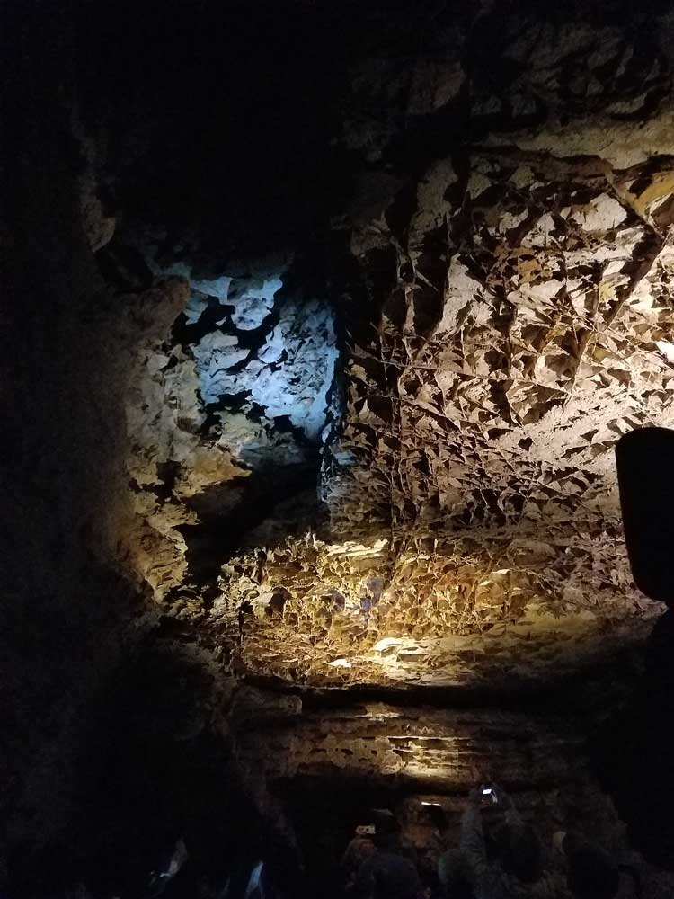
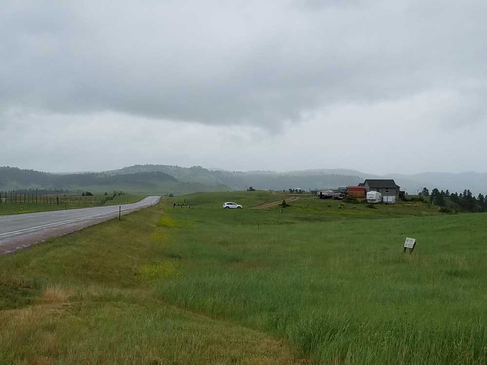
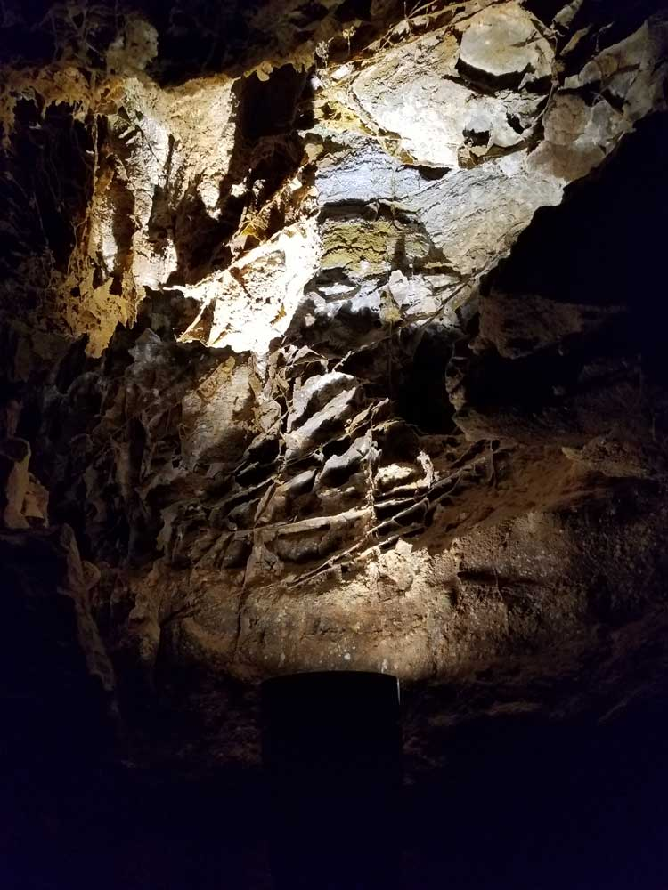
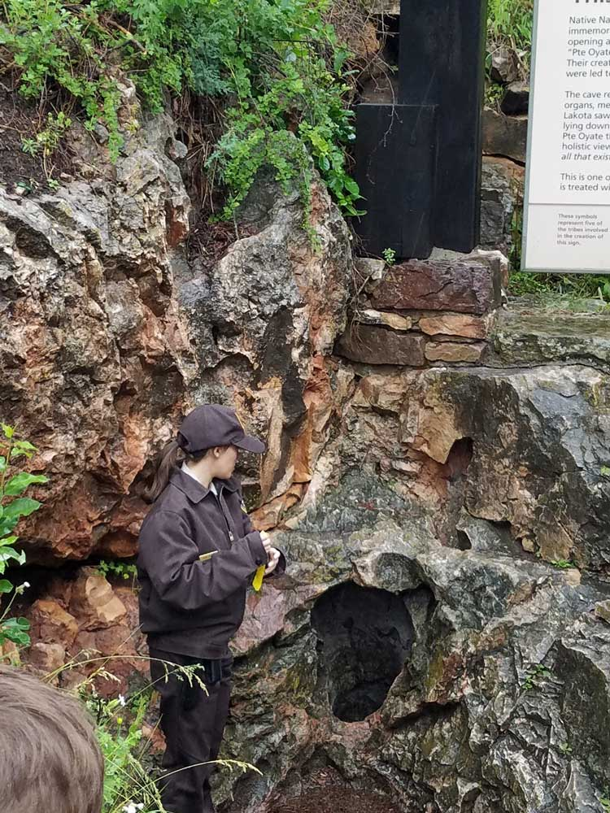

One of the longest caves in the world with 149.01 miles of explored cave passageways, as of 2018. Above ground, the park includes the largest remaining natural mixed-grass prairie in the United States
General Information
Park roads are generally open year round. However, snow and severe weather can limit access to some remote parts of the park, especially in winter
From Rapid City (42mi) Head north on Mt Rushmore Rd toward St Joseph St. Continue on St Joseph St to SD-79 S. Continue onto SD-79 S. Take Lame Johnny Rd to Csp Rd 6/Red Valley Rd.
Overview
Wind Cave National Park in the Black Hills of southwestern South Dakota was the first cave in the world to be designated a national park. Its cave is among the longest and most complex in the world, with more than 149 miles of explored passages, and it is known for boxwork, a rare honeycomb-like calcite formation of which the cave holds about 95 percent of the world's discovered examples. The cave is also a "breathing" cave: air moves in and out of its few openings to equalize atmospheric pressure, which gave the cave its name. Above ground, the park protects one of the largest remaining natural mixed-grass prairies in the United States.
Native tribes, including the Lakota and Cheyenne, knew of the cave for generations, and the Lakota consider it a sacred site where their people first emerged. The Bingham brothers heard the wind rushing from a small hole in 1881, the McDonald family began exploring and developing it for tourism in 1890, and President Theodore Roosevelt designated it a national park in 1903. People visit to take a ranger-guided cave tour and to see bison, elk, and prairie dogs on the surface. The park does not charge an entrance fee, but cave tours require tickets.
Park Sections
The park has two main parts: the cave and the surface. The visitor center and the elevators into the cave are in the park's southeastern area, reached from US-385 and Highway 87 north of Hot Springs, and all cave tours begin there. The surface area, with its prairie and ponderosa pine forests, is crossed by Highway 87 and US-385, and includes trailheads such as Rankin Ridge, Elk Mountain, and Wind Cave Canyon. The park adjoins Custer State Park to the north, and the two share wildlife ranges.
Sightseeing and Exploring the Park
Wind Cave has no designated scenic drive, but US-385 and Highway 87 pass through the prairie and are good places to look for bison, elk, and pronghorn. The best overlook is at Rankin Ridge, where a short drive and a 1-mile trail lead to a fire tower with views over the Black Hills and prairie. Beyond the park, the Wildlife Loop Road and Needles Highway in Custer State Park, Mount Rushmore, and Crazy Horse Memorial are all within about an hour. Most visitors spend the day on a cave tour and an afternoon on the surface.
Hiking
The park has about 30 miles of surface trails. Easy hikes include the Rankin Ridge Nature Trail, a 1-mile loop with a fire tower view, and the Elk Mountain Nature Trail, a 1.2-mile loop near the campground. The Wind Cave Canyon Trail follows a dry canyon, and the Highland Creek and Centennial Trails are longer routes through prairie and forest. See the Centennial, Highland Creek, and Lookout Point trails for more. Hikers may also walk cross-country in much of the park. Bison are dangerous, so keep your distance and give them the right of way.
Other Activities
The cave tours are the main activity and are described in detail below. Choices range from short accessible and standard tours to the lantern-lit Candlelight Tour and the Wild Cave Tour, which involves crawling in undeveloped passages. Above ground, the park offers ranger programs, wildlife watching, stargazing, backcountry camping, and hiking. The surrounding Black Hills provide many other activities, including Mount Rushmore, Custer State Park, Jewel Cave National Monument, Crazy Horse, and the Mammoth Site in Hot Springs.
Flora and Wildlife
The park's grasslands are home to elk, pronghorn, mule deer, coyotes, prairie dogs, and a herd of bison that is one of the few free-roaming and genetically pure herds on public land in North America. Prairie dog towns along the roads are easy to see, and black-footed ferrets have been reintroduced in the area. The prairie includes native grasses and wildflowers, and ponderosa pine forests cover the hills to the west. In the cave, bats and other cave life live in the darkness. Wildlife viewing is on your own, and animals are most active early and late in the day.
Access
The park is in the southern Black Hills, about 10 miles north of Hot Springs and 25 miles south of Custer on US-385. Rapid City is about 60 miles northeast, a drive of roughly 1.25 hours, and has the nearest commercial airport. Visitors generally arrive by car, and there is no public transportation. Services are limited in the park, so stock up in Hot Springs or Custer. The cave and visitor center are accessible by paved road, and the roads on the surface are open year-round.
Seasons
The cave stays at about 53 °F year-round, so tours are comfortable in any season, though a jacket is needed. Summer is the busiest season, with the most tours, warm days, and thunderstorms, and tour tickets can sell out. Spring and fall are quieter and good for wildlife and hiking, and fall brings elk activity and golden aspens in the hills. Winter is cold with snow and offers fewer tours, though the cave is still open. Check the National Park Service website for the tour schedule, which varies by season.
Camping and Lodging
Elk Mountain Campground, with about 75 sites, is the only developed campground in the park, and backcountry camping is allowed with a permit. There is no lodging in the park. The towns of Hot Springs and Custer have motels, cabins, and campgrounds, including Hot Springs' historic buildings and the Evans Plunge hot spring. Custer State Park, to the north, has four resorts and lodges, including the State Game Lodge, Sylvan Lake Lodge, and Blue Bell Lodge, as well as campgrounds. Rapid City and Keystone, each about an hour away, have a wide range of hotels.
Visitor Centers
The Wind Cave Visitor Center is the park's only visitor center and the starting point for all cave tours. It has exhibits on the cave's geology and history, a bookstore, and a ticket desk, and tour tickets can also be reserved on Recreation.gov. The elevators to the cave are in the building next to it. Rangers can advise on tours, trails, and wildlife. Hours vary by season and tour schedule, so check the National Park Service website.
Cave Tour Overview
Wind Cave National Park is home to one of the world's longest and most complex cave systems and contains the largest known concentration of the rare cave formation known as boxwork. The cave can only be explored on ranger-guided tours that depart from the park's Visitor Center. These tours allow visitors to experience the cave's intricate passages, unique formations, and fascinating geological history while learning about the discovery and exploration of the cave.
Unlike many cave systems known for massive chambers and stalactites, Wind Cave is renowned for its maze-like passageways and extraordinary boxwork formations. Visitors can choose from a variety of guided experiences ranging from easy accessible tours to challenging adventure tours involving crawling and navigating undeveloped sections of the cave. The park itself does not charge an entrance fee, but cave tours require separate tickets.
Cave Tour Options
| Tour | Duration | Difficulty | Overview |
|---|---|---|---|
| Garden of Eden Tour | 1 Hour | Moderate | The shortest standard tour, showcasing boxwork, cave popcorn, frostwork, and other notable formations. |
| Natural Entrance Tour | 75-90 Minutes | Moderate | The park's signature tour featuring the natural entrance, extensive boxwork displays, and historic cave passages. |
| Fairgrounds Tour | 90 Minutes | Strenuous | Explores multiple cave levels and some of the park's finest boxwork, frostwork, and cave popcorn formations. |
| Candlelight Tour | Approximately 2 Hours | Strenuous | Lantern-lit experience that recreates the atmosphere of early cave exploration. |
| Wild Cave Tour | Up to 4 Hours | Very Strenuous | An adventurous off-trail experience involving crawling, squeezing, and exploring undeveloped cave passages. |
| Accessibility Tour | 30 Minutes | Easy | A short introduction to the cave designed for visitors with mobility limitations. |
Tour Categories
- Classic Cave Tours – Garden of Eden, Natural Entrance, and Fairgrounds tours provide the best introduction to Wind Cave's unique geology and boxwork formations.
- Historic Exploration Experiences – Candlelight Tour offers a glimpse into how early explorers discovered and navigated the cave.
- Adventure Caving – The Wild Cave Tour is designed for visitors seeking a physically demanding caving experience.
- Accessible Experiences – The Accessibility Tour provides cave access for visitors with mobility challenges.
Pricing Overview
| Tour Type | Adult Price (Age 16-61) |
|---|---|
| Accessibility Tour | $6 |
| Garden of Eden Tour | $14 |
| Natural Entrance Tour | $16 |
| Fairgrounds Tour | $16 |
| Candlelight Tour | Approximately $16-$20 |
| Wild Cave Tour | Approximately $45 |
The average price across the primary cave tours is approximately $19 per adult, making Wind Cave one of the more affordable cave touring experiences within the National Park System. Youth and senior visitors typically receive discounted pricing, while children under six may participate in select tours free of charge.
Tour Difficulty Comparison
| Tour | Distance | Approximate Stairs |
|---|---|---|
| Accessibility Tour | 100 Feet | 0 |
| Garden of Eden Tour | 1/4 Mile | 150 |
| Natural Entrance Tour | 2/3 Mile | 300 |
| Fairgrounds Tour | 2/3 Mile | 450 |
| Wild Cave Tour | Varies | Crawling and climbing required |
Recommended Tours for First-Time Visitors
- Natural Entrance Tour for the best overall introduction to Wind Cave and its famous boxwork formations.
- Garden of Eden Tour for visitors seeking a shorter and less strenuous experience.
- Fairgrounds Tour for those wanting to see more of the cave and additional geological features.
- Wild Cave Tour for experienced adventurers looking for a true caving experience.
Information in this article is based on cave tour descriptions, visitor information, and fee schedules published by the Wind Cave National Park Guided Tours, Wind Cave National Park Fees & Passes, and Recreation.gov Wind Cave Tour Reservations.
The Wind Cave visitor center features three exhibit rooms about the geology of the caves and early cave history, the park's wildlife and natural history, and the work of the Civilian Conservation Corps in the park.
This article uses material from the Wikipedia article "Wind Cave National Park", which is released under the Creative Commons Attribution-Share-Alike License 3.0. Additional information comes from the National Park Service Wind Cave National Park website.
Featured Trails and Tours

Dough4872, CC BY-SA 4.0, via Wikimedia Commons; Image Size Adjusted

Candlelight Tour
Guided underground cave experience illuminated by candle lanterns that explores narrow passages, rare boxwork formations, and historic sections of the cave system.
Dough4872, CC BY-SA 4.0, via Wikimedia Commons; Image Size Adjusted
Centennial Highland Creek and Lookout Point Trails
Scenic prairie and forest loop hike featuring rolling grasslands, shaded creek corridors, wildlife habitat, and elevated panoramic overlooks across the surrounding landscape.
Dough4872, CC BY-SA 4.0, via Wikimedia Commons; Image Size Adjusted
Elk Mountain Nature Trail
Short interpretive loop trail winding through prairie grasslands and ponderosa pine forest with opportunities to observe wildlife and learn about the park's unique ecosystem.
Dough4872, CC BY-SA 4.0, via Wikimedia Commons; Image Size Adjusted
Fairgrounds Tour
Strenuous underground cave tour featuring extensive boxwork formations, large chambers, narrow passageways, and long stair descents through multiple levels of the cave system.
Dough4872, CC BY-SA 4.0, via Wikimedia Commons; Image Size Adjusted
Garden of Eden Tour
Accessible underground cave tour showcasing rare boxwork formations, cave popcorn, and flowing calcite features along a relatively short guided route.
Dough4872, CC BY-SA 4.0, via Wikimedia Commons; Image Size Adjusted
Natural Entrance Tour
Guided cave experience entering through the historic man-made entrance while showcasing dense boxwork formations, underground chambers, and winding passages deep below the surface.
Dough4872, CC BY-SA 4.0, via Wikimedia Commons; Image Size Adjusted
Rankin Ridge Nature Trail
Short ridge-top hiking trail featuring panoramic prairie views, rolling grasslands, wildlife viewing opportunities, and one of the highest accessible overlooks in the park.
Dough4872, CC BY-SA 4.0, via Wikimedia Commons; Image Size Adjusted
Wind Cave Canyon Trail
Scenic canyon hiking trail featuring flowing creek crossings, ponderosa pine forest, prairie meadows, limestone canyon walls, and abundant wildlife habitat.



